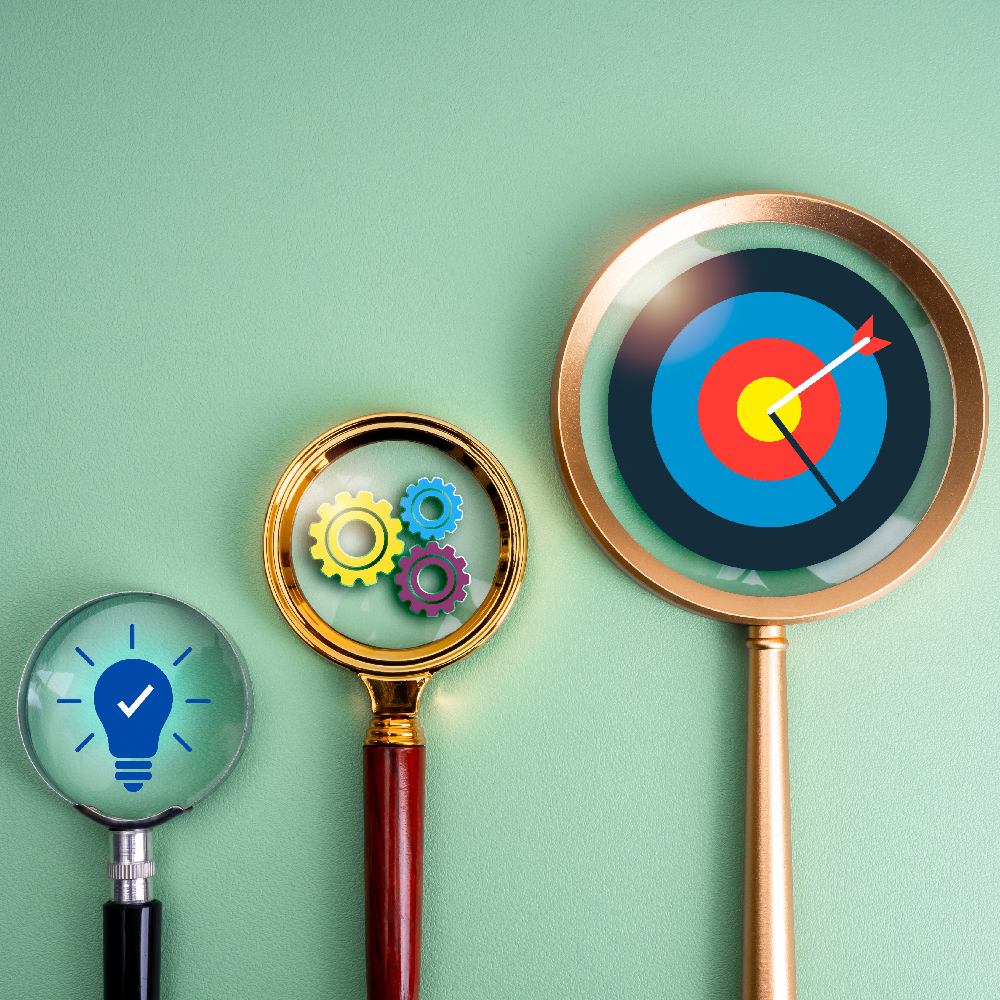

Objet défini
Lancée en mars 2023, la communauté en ligne « Le train du ras-le-bol » est à but non lucratif. Elle ne permet ni l’encaissement de sommes destinées à financer son fonctionnement ou à permettre un enrichissement, ni l’apport d’affaires par son intermédiaire. Son fonctionnement repose néanmoins sur la mise à disposition de moyens techniques, matériels et humains qui représentent un coût. Cette mise à disposition répond à une raison d’être précise, formalisée dans un objet défini. Cet objet encadre la mise en place et le maintien de nos groupes WhatsApp « Les reporters » et justifie les moyens qui leur sont consacrés. Il implique le respect de conditions précises auxquelles nous devons nous conformer et que nous devons également faire respecter.